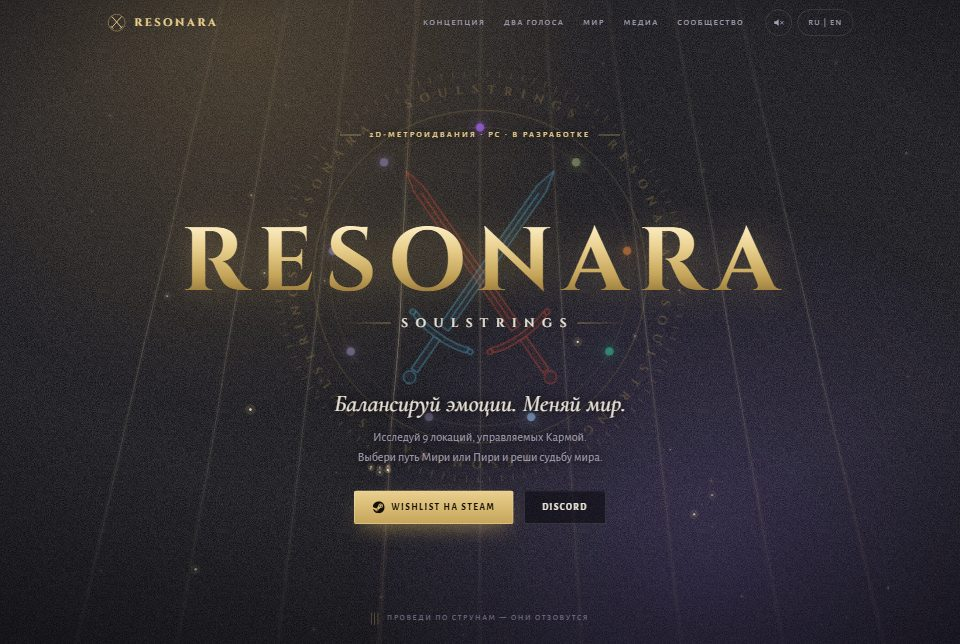
Сделано и работает.
Сайты, автоматизации и AI, которые уже работают. Откройте любую работу и посмотрите, как она устроена. Приложения и закрытые проекты покажем на созвоне.

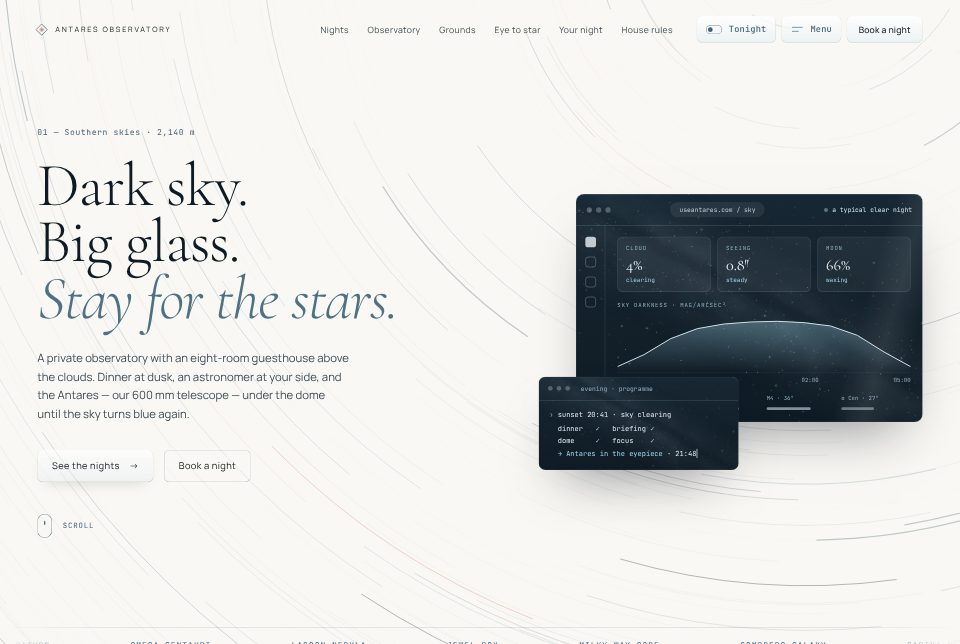
Сайт игры · интерактив · RU / EN
Сайт для игры, которая ещё в разработке. Трейлера пока нет — поэтому идею игры передаёт сам сайт: его можно потрогать и услышать.
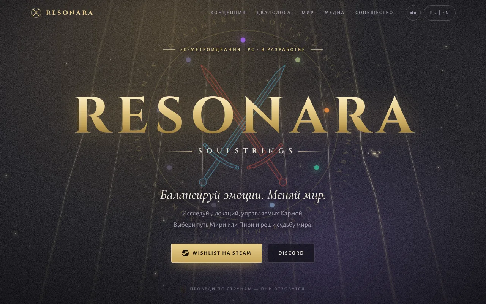
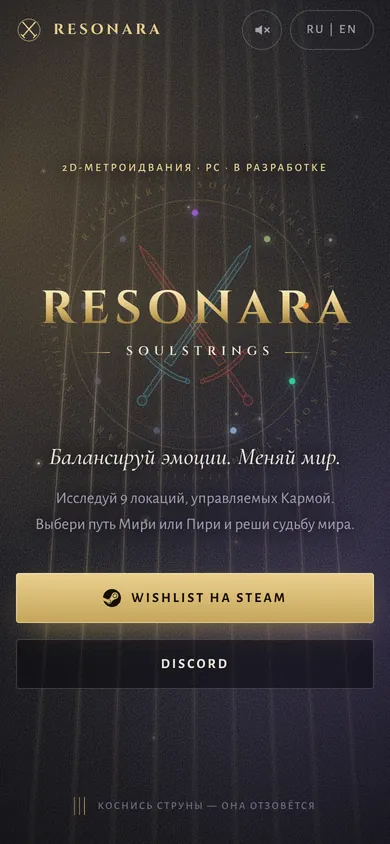
Открыть сайт ↗Проведите курсором по струнам и включите звук — справа вверху.Коснитесь струн и включите звук — справа вверху.
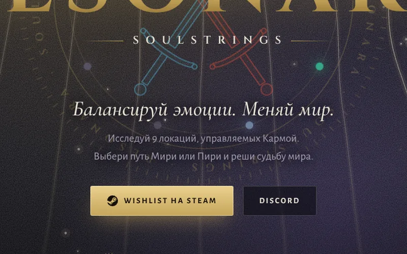
Весь фон — натянутые струны. Проведите по ним курсором или пальцем: они дрожат, как настоящие. Название игры — Soulstrings, «струны души» — понятно с первой секунды, без единого слова.
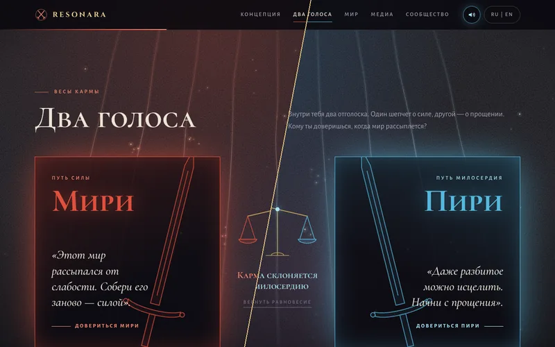
Посетитель решает, кому довериться: Мири — путь силы, или Пири — путь милосердия. Страница сразу перекрашивается в цвет героя. Так устроена и сама игра: каждое решение меняет мир.
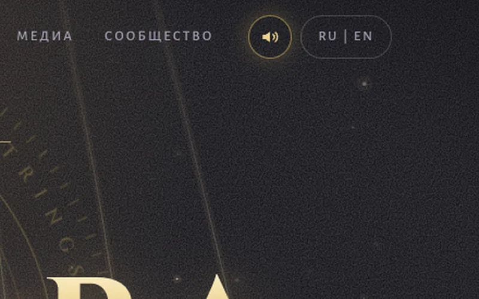
Включите звук — и каждая струна ответит своей нотой. Звук не записан заранее: сайт сам «щиплет» струну прямо в браузере. Поэтому звучит живо, а сайт остаётся лёгким.
Сайт обсерватории · бронь · EN
Сайт частной обсерватории с гостевым домом в горах. Его задача — продать ночь под звёздами человеку, который ни разу не смотрел в большой телескоп. Фон — звёздное небо на длинной выдержке: оно медленно вращается, пока вы листаете страницу.
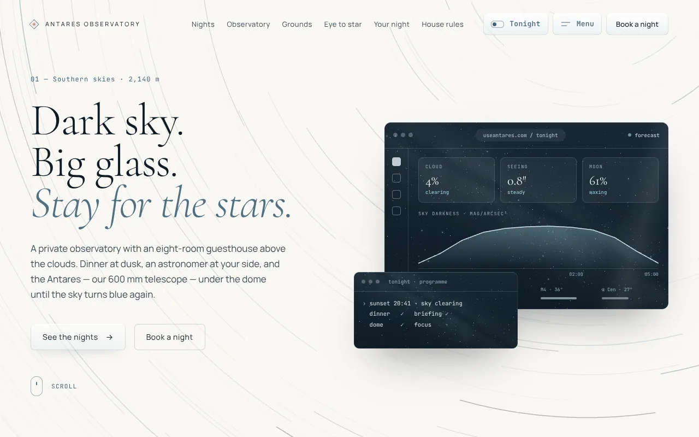
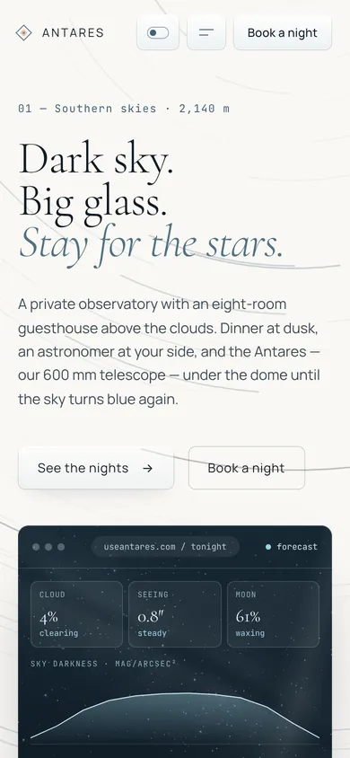
Открыть сайт ↗Нажмите T — откроется небо на сегодня.Переключатель вверху открывает небо на сегодня.
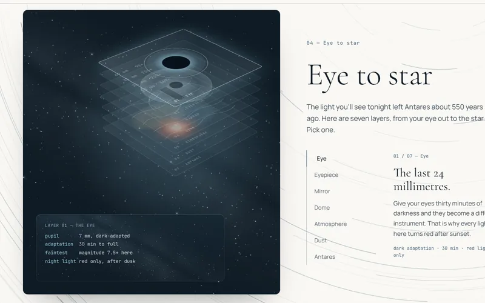
Схема по слоям показывает путь света: от глаза гостя через окуляр, зеркало и купол до самой звезды. А окно телескопа — что в него видно: Сатурн, звёздные скопления, туманности. Сложное понятно без лекции.
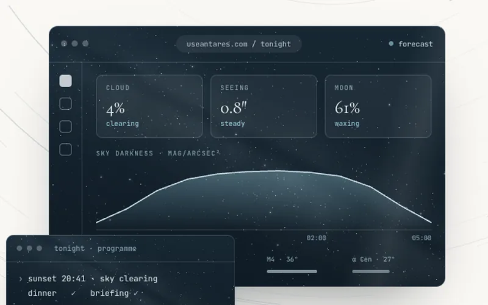
Сайт сам считает фазу Луны, ближайшее новолуние и самые тёмные ночи. Гость видит, когда лучше приехать, а владельцу не нужно ничего обновлять руками.
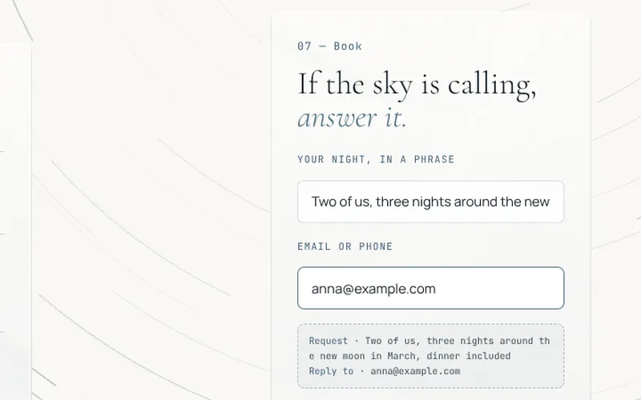
Пакеты ночей с ценами и форма, где гость пишет пожелания своими словами. Ещё до отправки он видит, как будет выглядеть его заявка.
AI · Битрикс24
AI слушает звонки отдела продаж и подсказывает каждому менеджеру, что сделать лучше.
Звонков много, а руководитель один. Прослушать всё он физически не успевал, поэтому проверял выборочно. Менеджеры узнавали о своих ошибках редко — и обычно когда клиент уже ушёл.
Каждый разговор записывается и переводится в текст. AI разбирает его по правилам хорошего звонка: поздоровался ли менеджер, выяснил ли, что нужно клиенту, как ответил на возражения, договорился ли о следующем шаге. Разбор с оценкой появляется прямо в карточке клиента в CRM. Итог за день можно получать в Telegram — удобно тем, кому некогда заходить в CRM.
AI · Telegram-бот · дашборд
Система для команды художников: со встречи сами появляются задачи, а Telegram-бот ведёт каждую до сдачи.
Задачи ставили голосом на созвонах — и они постоянно терялись. Кто что делает и к какому сроку, помнили не все, а руководитель вручную раздавал задачи и напоминал о сроках.
Созвоны записываются — подойдёт любой сервис с записью: Discord, Яндекс Телемост и другие. AI расшифровывает разговор и выделяет решения, задачи, ответственных и сроки. Руководитель получает список в Telegram: подтверждает одной кнопкой, а если AI что-то перепутал — поправляет вручную. Итоги встречи уходят в общую группу. Дальше задачи ведёт бот: у каждой есть карточка, бот принимает работу, передаёт правки и напоминает о сроках.
Автоматизация · AI
Товары появляются на сайте с характеристиками и SEO-описанием — без ручного заполнения.
Каждый товар заводили на сайт вручную: найти характеристики, свести их в одном месте, по одной перенести в карточку, написать описание. Когда у товара куча характеристик, на одну карточку уходит уйма времени.
Данные о товарах загружаются одним файлом — откуда удобно: прайс, таблица, выгрузка поставщика. Система сама создаёт карточки на сайте и раскладывает характеристики, а AI пишет SEO-описание под каждый товар. Названия и характеристики берутся только из данных — AI их не придумывает, поэтому в них нет ошибок. Публиковать можно сразу или после проверки. Когда всё готово, в Telegram приходит отчёт.
AI · база знаний
Сотрудник задаёт рабочий вопрос — помощник отвечает по документам компании.
Ответы на рабочие вопросы лежали в регламентах, инструкциях и в головах опытных сотрудников. Чтобы что-то узнать, приходилось искать по папкам или отвлекать коллег.
У каждого отдела — продаж, бухгалтерии, поддержки — свой помощник и своя база знаний. Спросить можно в Telegram или в веб-чате. Помощник ищет ответ в документах, которые загрузили сами сотрудники, поэтому отвечает по правилам компании, а не «из интернета». Базы можно разделить по отделам или сделать общую — как удобно компании.
Интеграция · Битрикс24
Заказ с сайта, из мини-приложения в Telegram или из приложения сразу попадает в CRM, а менеджер узнаёт о нём в Telegram.
Клиенты заказывают там, где им удобно: на сайте, в Telegram, в приложении. Когда заказы приходят в разные места, их легко пропустить, а менеджер узнаёт о них с опозданием.
Каталог, корзина и оформление заказа есть на сайте, в мини-приложении Telegram и в приложении для телефона. Каждый заказ сам создаёт клиента и заявку в Битрикс24 — вместе с составом корзины. Уведомление получает тот, кому нужно: менеджер или общая группа.
Так же подключаются Авито, Wildberries и Ozon — у них есть официальный доступ для программ (API).
Контакт
Предложим решение, сроки и смету после первого созвона.